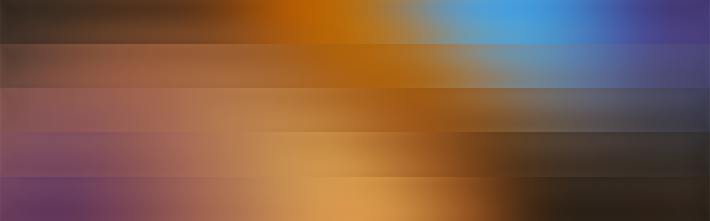
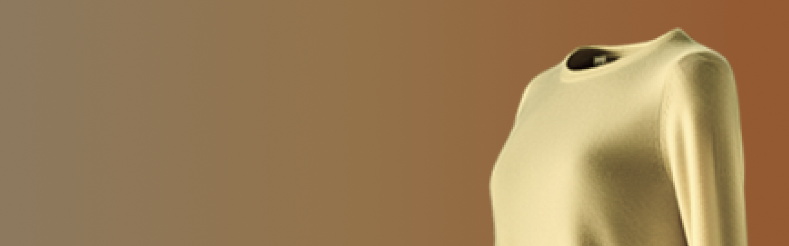
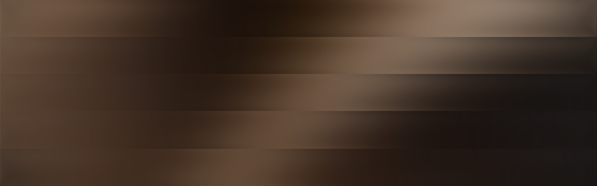
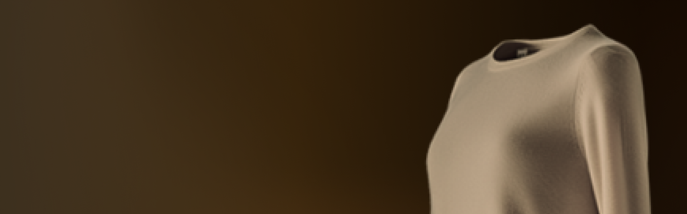
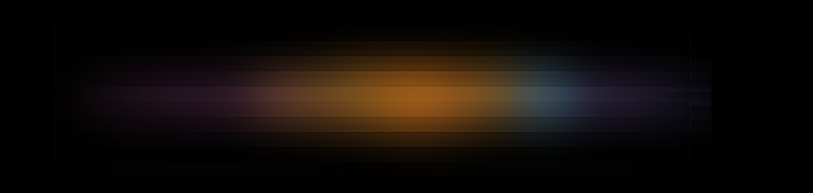
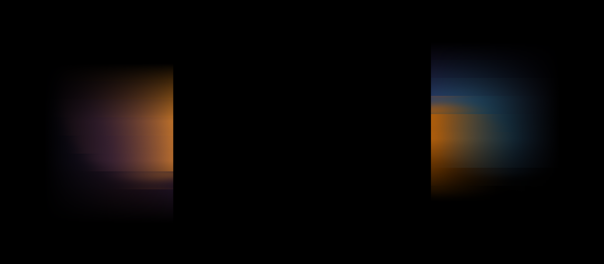
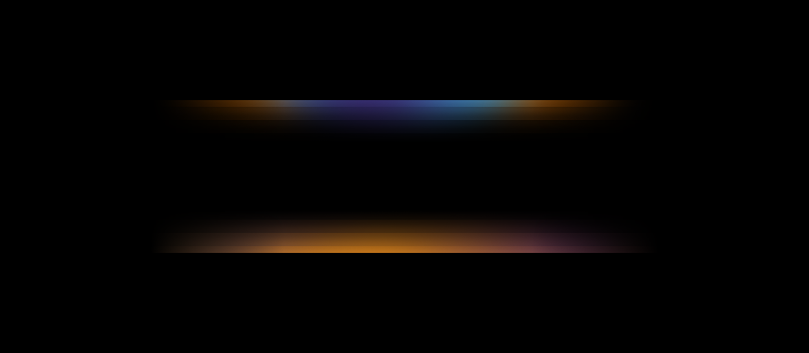
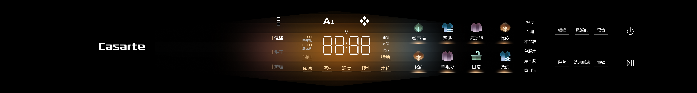
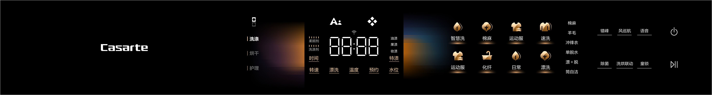
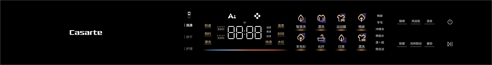

背景规范
制定统领高、中、低端多代设备的数字环境与光影表达体系，兼顾品牌质感与场景可读性。
核心设计原则
品牌一致性
背景构建产品的数字环境，从旗舰 TFT 到基础 LED，均遵循统一的 Haier 品牌语言；不同设备的表达能力可以不同，品牌感知应一致。
辅助而非装饰
避免复杂纹理、强对比材质和高频细节；资源受限时进一步简化。动态背景采用平滑缓动，不出现突变或剧烈闪烁。
前景始终可读
光影和色彩变化不得遮蔽文字、图标与关键操作。画面过亮或过于复杂时，压暗背景（如底部深色渐变遮罩），或把透明毛玻璃卡片切换为不透明实色。
TFT 背景
TFT 背景元素
左右并排展示各档位的 AI 动态模式与常规调参形态，形成清晰的比对关系。
艺术系列 (Art)
左：AI 动态模式 | 右：常规调参模式必须使用动态背景。基于 AI 算法实时渲染流体与光影变化，表现品牌最高阶的质感与氛围。
必须使用动态背景。采用高精度的质感与光影平滑缓动，兼顾丰富材质细节与高端视觉质感。

必须使用静态背景。提取 AI 模式的核心色彩与光影制成静态图，降低芯片算力与硬件成本。
必须使用静态背景。在高端常规背景的基础上大幅减少纹理与光影细节，保持画面简洁干净。

必须使用静态背景降本。采用极简静态纯色渐变背景，搭配写实图标，确保低性能屏幕流畅显示。

必须使用静态背景降本。采用极简静态纯色渐变背景，搭配写实图标，最大程度节约资源与成本。
专业系列 (Professional)
左：AI 动态模式 | 右：常规调参模式必须使用动态背景。结合 AI 响应呈现动态金属光束与精密控制线条，突出专业科技感。
必须使用动态背景。采用深色暗调微拉丝金属动态背景，增强前景色文字与控件的可读性。

必须使用静态背景。将 AI 动态光束抽帧转化为静态图案，保留专业科技感同时降低硬件负担。
必须使用静态背景。在高端常规背景的基础上大幅减少纹理与光影细节，保持画面简洁干净。

必须使用静态背景降本。采用纯色暗调渐变背景，搭配写实图标，确保轻量化并提升读数清晰度。

必须使用静态背景降本。采用纯色暗调渐变背景，搭配写实图标，彻底消除杂讯并实现极简降本。
TFT 背景注意事项

不推荐：背景元素有违背常规逻辑，光影来源方向混乱。

不推荐：背景元素不清晰，纹理噪点过多且意义不明。

不推荐：背景明亮度过高，导致上层白字图标无法分辨。

不推荐：光栅元素边缘对比度太强，影响产品外观整体。
LED 背景
1. LED 背景元素
定义 4 种专属于 LED 屏段显示的微型光晕与光栅。

超宽比例光晕（适用于旗舰/高端机器）

两侧对称分布光晕（适用于中端机器）

上下/中心集聚光彩（适用于中端机器）
渐变光晕线条（适用于低端/基础机器）
2. LED 背景页面示例
长条形真机显示屏幕上的实际渲染示例。



3. LED 背景注意事项

不推荐：背景光栅元素厚度过大，且切割过于明显。

不推荐：背景用色偏离品牌标准，色相偏差过大破坏视觉统一。

不推荐：背景明度与图标接近且细节过多，导致图标辨识度低。
4. 如何使用（搭配逻辑矩阵）
背景 × 图标 × 布局 搭配逻辑矩阵
明确各档位机器与背景、图标及布局的对应规范。
| 机器定位 | 适配背景 (4种) | 适配图标形态 (7种) | 适配布局方式 (4种) |
|---|---|---|---|
| 高端机器 | 背景 1 | A1 A2 高端图标 |
所有机器通用适配 4 种布局： • 居中布局：居中1、居中2 • 靠右布局：靠右1、靠右2 |
| 中端机器 | 背景 2 背景 3 | A3 A4 中端图标 | |
| 低端机器 | 背景 4 | A5 A6 A7 低端图标 |